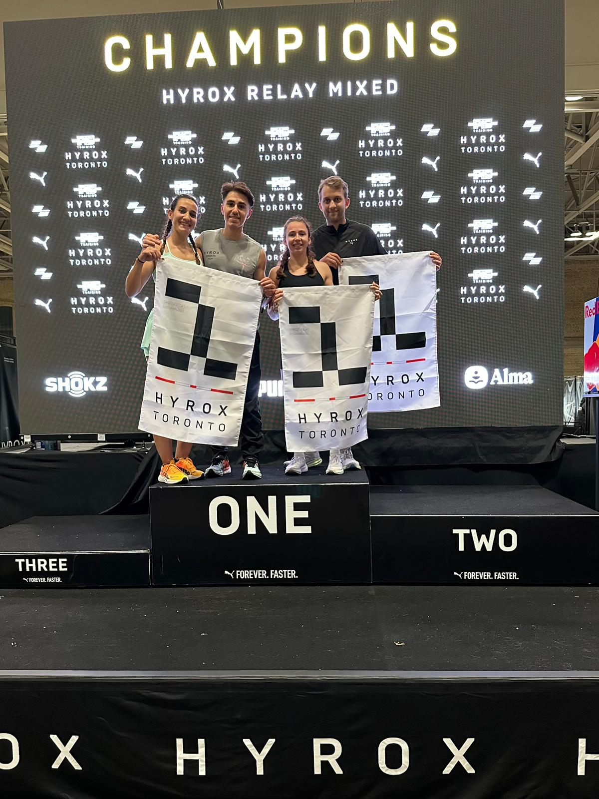
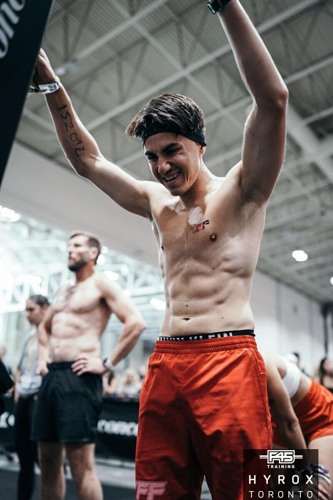

HYROX is the World Series of Fitness Racing — a fast-growing global fitness competition that combines running and functional workouts in a standardized, measurable, and comparable format. Whether you're an elite athlete or a fitness beginner, HYROX is designed for everyone.
The Official HYROX Format
Every HYROX race is identical across the world. This is what makes it unique: your time in Toronto, Nice, Paris, or New York can be directly compared with any other athlete on the planet. The format is simple and brutal:
Total: 8 km of running + 8 workout stations
The 8 Workout Stations
After each 1 km run, athletes complete one of these functional workouts, always in the same order:
- 1000m SkiErg — full-body ski ergometer
- 50m Sled Push — heavy sled over 2 x 25m
- 50m Sled Pull — pulling a sled with a rope
- 80m Burpee Broad Jumps — explosive full-body movement
- 1000m Rowing — Concept 2 rower
- 200m Farmers Carry — two kettlebells, grip endurance
- 100m Sandbag Lunges — weighted walking lunges
- 100 Wall Balls — the famous final station

HYROX Toronto — YFF athletes on the podium
Categories for Everyone
HYROX is built so that every level of athlete has a place to compete:
- HYROX Open — Open category, for all fitness levels
- HYROX Pro — Higher weights for the experienced
- HYROX Doubles — Two-person team, shared workload
- HYROX Relay — 4-person relay teams
Why HYROX is Exploding
Since its launch in 2017 in Germany, HYROX has grown into a global phenomenon with hundreds of thousands of athletes competing each season across dozens of cities worldwide. Here's why people are hooked:
- Measurable progression — same format everywhere, so you can track improvement race after race
- Accessible — no skill-based movements like Olympic lifts or gymnastics. If you can run, push, pull and carry, you can HYROX
- Spectator-friendly — an arena experience with music, lights, and thousands of athletes
- Community — a global family of athletes, coaches, and first-timers

The finish line moment — what HYROX is all about
How to Prepare for Your First HYROX
The beauty of HYROX is that the format is known — which means preparation is specific and structured. A smart training program should combine:
- Running capacity (volume + race-pace intervals)
- Strength and power on the key stations
- Transition work (the ability to run after a heavy station)
- Race strategy and pacing
This is exactly what I focus on in the YFF HYROX Academy — teaching athletes the objective of each training phase, each stimulus, and how to arrive at the start line prepared both physically and mentally.
Ready to run your first HYROX?
Whether it's your first race or you're chasing the podium, I coach athletes at every level with personalized HYROX programming.
Discover HYROX Coaching